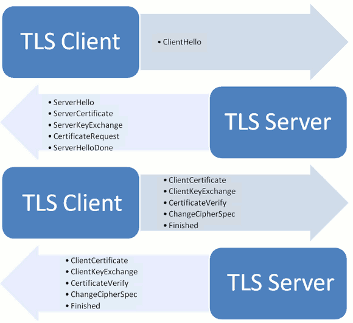

HTTPS
HTTPS 是一种通过计算机网络进行安全通信的传输协议。HTTPS经由HTTP进行通信，但利用 SSL/TLS 来加密数据包。 HTTPS 开发的主要目的，是提供对网站服务器的身份认证，保护交换数据的隐私与完整性。
HTTPS 的主要思想是在不安全的网络上创建一安全信道，并可在使用适当的加密包和服务器证书可被验证且可被信任时，对窃听和中间人攻击提供合理的防护。HTTPS的信任继承基于预先安装在浏览器中的证书颁发机构（如Symantec、Comodo、GoDaddy和GlobalSign等）（意即“我信任证书颁发机构告诉我应该信任的”）
HTTP 为什么不安全
http 协议属于 明文传输协议 ，交互过程以及数据传输都没有进行加密，通信双方也没有进行任何认证，通信过程非常容易遭遇劫持、监听、篡改，严重情况下，会造成恶意的流量劫持等问题，甚至造成个人隐私泄露（比如银行卡卡号和密码泄露）等严重的安全问题。
比如常见的，在 http 通信过程中，“中间人”将广告链接嵌入到服务器发给用户的 http 报文里，导致用户界面出现很多不良链接； 或者是修改用户的请求头 URL ，导致用户的请求被劫持到另外一个网站，用户的请求永远到不了真正的服务器。这些都会导致用户得不到正确的服务，甚至是损失惨重。
HTTPS 如何保证安全
要解决 http 带来的问题，就要引入加密以及身份验证机制。
数字证书
服务器首先生成公私钥，将公钥提供给相关机构（CA），CA 将公钥放入数字证书并将数字证书颁布给服务器，此时服务器就不是简单的把公钥给客户端，而是给客户端一个数字证书，数字证书中加入了一些数字签名的机制，保证了数字证书一定是服务器给客户端的。中间人发送的伪造证书，不能够获得 CA 的认证，此时，客户端和服务器就知道通信被劫持了。
证书由 公钥、证书主体、数字签名 等内容组成。在客户端发起 SSL 请求后，服务端会将数字证书发给客户端，客户端会对证书进行验证（验证这张证书是否是伪造的？也就是公钥是否是伪造的），如果证书不是伪造的，客户端就获取用于对称密钥交换的非对称密钥（获取公钥）
数字证书有三个作用：
- 身份授权：确保浏览器访问的网站是经过CA验证的可信任的网站。
- 分发公钥：每个数字证书都包含了注册者生成的公钥（验证确保是合法的，非伪造的公钥）。在
SSL握手时会通过certificate消息传输给客户端。 - 验证证书合法性：客户端接收到数字证书后，会对证书合法性进行验证。只有验证通过后的证书，才能够进行后续通信过程。
证书的认证
信任：浏览器内置了信任的根证书，就是看看web服务器的证书是不是这些信任根发的或者信任根的二级证书机构颁发的。
对方是不是上述证书的合法持有者。简单来说证明对方是否持有证书的对应私钥。验证方法两种，一种是对方签个名，我用证书验证签名；另外一种是用证书做个信封，看对方是否能解开。
有效，就是看看web服务器证书是否在有效期，是否被吊销了。
验证正式是否吊销可以采用黑名单方式或者OCSP方式。黑名单就是定期从CA下载一个名单列表，里面有吊销的证书序列号，自己在本地比对一下就行。优点是效率高。缺点是不实时。OCSP是实时连接CA去验证，优点是实时，缺点是效率不高。
怎样避免第三方伪造这个证书？答案就是数字签名（ digital signature ）。数字签名是证书的防伪标签，目前使用最广泛的 SHA-RSA （SHA用于哈希算法，RSA用于非对称加密算法）。数字签名的制作和验证过程如下：
1. 数字签名的签发：首先是使用哈希函数对证书内容进行安全哈希，生成消息摘要，然后使用CA自己的私钥对消息摘要进行加密。
2. 数字签名的校验：使用 CA 的公钥和证书里的解密算法解密签名，根据证书的摘要算法计算证书摘要信息，并进行比较，如果相同就认为校验成功。
需要注意的是：
1. 数字签名签发和校验使用的非对称密钥是CA自己的公钥和私钥，跟证书申请者（提交证书申请的公司实体）提交的公钥没有任何关系。
2. 数字签名的签发过程跟公钥加密的过程刚好相反，即是用私钥加密，公钥解密。（一对公钥和私钥，公钥加密的内容只有私钥能够解密；反过来，私钥加密的内容，也就有公钥才能够解密）
3. 现在大的CA都会有证书链，证书链的好处：首先是安全，保持CA的私钥离线使用。第二个好处是方便部署和撤销。这里为啥要撤销呢？因为，如果CA数字证书出现问题（被篡改或者污染），只需要撤销相应级别的证书，根证书依然是安全的。
4. 根CA证书都是自签名，即用自己的公钥和私钥完成了签名的制作和验证。而证书链上的证书签名都是使用上一级证书的非对称密钥进行签名和验证的。
5. 怎样获取根CA和多级CA的密钥对？还有，既然是自签名和自认证，那么它们是否安全可信？这里的答案是：当然可信，因为这些厂商跟浏览器和操作系统都有合作，它们的根公钥都默认装到了浏览器或者操作系统环境里。
SSL/TLS协议
不使用SSL/TLS的HTTP通信，就是不加密的通信。所有信息明文传播，带来了三大风险。
（1） 窃听风险（eavesdropping）：第三方可以获知通信内容。
（2） 篡改风险（tampering）：第三方可以修改通信内容。
（3） 冒充风险（pretending）：第三方可以冒充他人身份参与通信。
SSL/TLS协议是为了解决这三大风险而设计的，希望达到：
（1） 所有信息都是加密传播，第三方无法窃听。
（2） 具有校验机制，一旦被篡改，通信双方会立刻发现。
（3） 配备身份证书，防止身份被冒充。
目前，应用最广泛的是 TLS 1.0，接下来是SSL 3.0。但是，主流浏览器都已经实现了 TLS 1.2 的支持。TLS 1.0通常被标示为SSL 3.1，TLS 1.1为SSL 3.2，TLS 1.2为SSL 3.3。
1994年，NetScape公司设计了SSL协议（Secure Sockets Layer）的1.0版，但是未发布。
1995年，NetScape公司发布SSL 2.0版，很快发现有严重漏洞。
1996年，SSL 3.0版问世，得到大规模应用。
1999年，互联网标准化组织ISOC接替NetScape公司，发布了SSL的升级版TLS 1.0版。
2006年和2008年，TLS进行了两次升级，分别为TLS 1.1版和TLS 1.2版。最新的变动是2011年TLS 1.2的修订版。
TLS 运行过程
SSL/TLS协议的基本思路是采用 公钥加密法，也就是说，客户端先向服务器端索要公钥，然后用公钥加密信息，服务器收到密文后，用自己的私钥解密。因此，SSL/TLS协议的基本过程是这样的：
（1） 客户端向服务器端索要并验证公钥。
（2） 双方协商生成"对话密钥"。
（3） 双方采用"对话密钥"进行加密通信。

"握手阶段"涉及四次通信，我们一个个来看。需要注意的是，"握手阶段"的所有通信都是明文的。
客户端发出请求（ClientHello）
首先，客户端（通常是浏览器）先向服务器发出加密通信的请求，这被叫做 ClientHello 请求。
在这一步，客户端主要向服务器提供以下信息。
（1） 支持的协议版本，比如TLS 1.0版。
（2） 一个客户端生成的随机数，稍后用于生成"对话密钥"。
（3） 支持的加密方法，比如RSA公钥加密。
（4） 支持的压缩方法。
这里需要注意的是，客户端发送的信息之中不包括服务器的域名。也就是说，理论上服务器只能包含一个网站，否则会分不清应该向客户端提供哪一个网站的数字证书。这就是为什么通常一台服务器只能有一张数字证书的原因。
对于虚拟主机的用户来说，这当然很不方便。2006年，TLS协议加入了一个 Server Name Indication 扩展，允许客户端向服务器提供它所请求的域名。
服务器回应（SeverHello）
服务器收到客户端请求后，向客户端发出回应，这叫做 SeverHello 。服务器的回应包含以下内容。
（1）确认使用的加密通信协议版本，比如TLS 1.0版本。如果浏览器与服务器支持的版本不一致，服务器关闭加密通信。
（2） 一个服务器生成的随机数，稍后用于生成 对话密钥。
（3） 确认使用的加密方法，比如 RSA 公钥加密。
（4） 服务器证书。
除了上面这些信息，如果服务器需要确认客户端的身份，就会再包含一项请求，要求客户端提供 "客户端证书"。比如，金融机构往往只允许认证客户连入自己的网络，就会向正式客户提供 USB 密钥，里面就包含了一张客户端证书。
客户端回应
客户端收到服务器回应以后，首先验证服务器证书。如果证书不是可信机构颁布、或者证书中的域名与实际域名不一致、或者证书已经过期，就会向访问者显示一个警告，由其选择是否还要继续通信。
如果证书没有问题，客户端就会从证书中取出服务器的公钥。然后，向服务器发送加密信息，包含下面三项信息。
（1） 一个随机数。该随机数用服务器公钥加密，防止被窃听。
（2） 编码改变通知，表示随后的信息都将用双方商定的加密方法和密钥发送。
（3） 客户端握手结束通知，表示客户端的握手阶段已经结束。这一项同时也是前面发送的所有内容的hash值，用来供服务器校验。
上面第一项的随机数，是整个握手阶段出现的第三个随机数，又称 pre-master key 。有了它以后，客户端和服务器就同时有了三个随机数，接着双方就用事先商定的加密方法，各自生成本次会话所用的同一把"会话密钥"。
至于 为什么一定要用三个随机数，来生成"会话密钥"：
不管是客户端还是服务器，都需要随机数，这样生成的密钥才不会每次都一样。由于SSL协议中证书是静态的，因此十分有必要引入一种随机因素来保证协商出来的密钥的随机性。
对于 RSA 密钥交换算法来说，
pre-master-key本身就是一个随机数，再加上 hello 消息中的随机，三个随机数通过一个密钥导出器最终导出一个对称密钥。
pre master的存在在于SSL协议不信任每个主机都能产生完全随机的随机数，如果随机数不随机，那么pre master secret（对称密钥） 就有可能被猜出来，那么仅适用pre master secret作为密钥就不合适了，因此必须引入新的随机因素，那么客户端和服务器三个随机数一同生成的密钥就不容易被猜出了，一个伪随机可能完全不随机，可是是三个伪随机就十分接近随机了，每增加一个自由度，随机性增加的可不是一个量级。
此外，如果前一步，服务器要求客户端证书，客户端会在这一步发送证书及相关信息。
服务器的最后回应
服务器收到客户端的第三个随机数 pre-master key 之后，计算生成本次会话所用的"会话密钥"。然后，向客户端最后发送下面信息。
（1）编码改变通知，表示随后的信息都将用双方商定的加密方法和密钥发送。
（2）服务器握手结束通知，表示服务器的握手阶段已经结束。这一项同时也是前面发送的所有内容的 hash 值，用来供客户端校验。
至此，整个握手阶段全部结束。接下来，客户端与服务器进入加密通信，就完全是使用普通的HTTP协议，只不过用"会话密钥"加密内容。
TCP 流过程
- Client Hello：客户端将其SSL版本号、加密设置参数、与session有关的数据以及其它一些必要信息（如加密算法和能支持的密钥大小）发送到服务器。
- Server Hello：服务器将其SSL版本号、加密设置参数、与session有关的数据以及其它一些必要信息发送给客户端
- Certificate（可选）：服务器发一个证书或一个证书链到客户端，证书链开始于服务器公共钥匙并结束于证明权威的根证书。该证书用于向客户端确认服务器的身份，该消息是可选的。如果配置服务器的SSL需要验证服务器的身份，会发送该消息。多数电子商务应用都需要服务器端身份验证。
- Certificate Request（可选）：如果配置服务器的SSL需要验证用户身份，还要发出请求要求浏览器提供用户证书。 多数电子商务不需要客户端身份验证，不过，在支付过程中经常需要客户端身份验证。
- Server Key Exchange（可选）：如果服务器发送的公共密钥对加密密钥的交换不是很合适，则发送一个服务器密钥交换消息。
- ServerHelloDone：通知客户端，服务器已经完成了交流过程的初始化。
- Certificate（可选）：客户端发送客户端证书给服务器。仅当服务器请求客户端身份验证的时候会发送客户端证书
- Client Key Exchange：客户端产生一个会话密钥与服务器共享。在SSL握手协议完成后，客户端与服务器端通信信息的加密就会使用该会话密钥。如果使用RSA加密算法，客户端将使用服务器的公钥将会话加密后再发送给服务器。服务器使用自己的私钥对接收的消息进行解密得到共享的会话密钥。
- Certificate Verify：如果服务器请求验证客户端，则这消息允许服务器完成验证过程。
- Change cipher spec：客户端要求服务器在后续的通信中使用加密模式
- Finished：客户端告诉服务器已经准备好安全通信了。
- Change cipher spec：服务器要求客户端在后续的通信中使用加密模式
- Finished：服务器告诉客户端它已经准备好安全通信了。SSL握手完成的标志
- Encrypted Data：客户端和服务端在安全信道上进行加密信息的交流
HTTPS 的七个误解
HTTPS无法缓存？：许多人以为，出于安全考虑，浏览器不会在本地保存HTTPS缓存。实际上，只要在HTTP头中使用特定命令，HTTPS是可以缓存的。SSL证书很贵？：如果你在网上搜一下，就会发现很多便宜的SSL证书，大概10美元一年，这和一个.com域名的年费差不多。而且事实上，还能找到免费的SSL证书。HTTPS站点必须有独享的IP地址？使用子域名通配符SSL证书（wildcard SSL certificate，价格大约是每年125美元），就能在一个IP地址上部署多个HTTPS子域名。转移服务器时要购买新证书？HTTPS太慢？：使用HTTPS不会使你的网站变得更快（实际上有可能，请看下文），但是有一些技巧可以大大减少额外开销。有了HTTPS，Cookie和查询字符串就安全了？：虽然无法直接从HTTPS数据中读取Cookie和查询字符串，但是你仍然需要使它们的值变得难以预测。只有注册登录页，才需要HTTPS？：这种想法很普遍。人们觉得，HTTPS可以保护用户的密码，此外就不需要了。Firefox浏览器新插件Firesheep，证明了这种想法是错的。我们可以看到，在Twitter和Facebook上，劫持其他人的session是非常容易的。